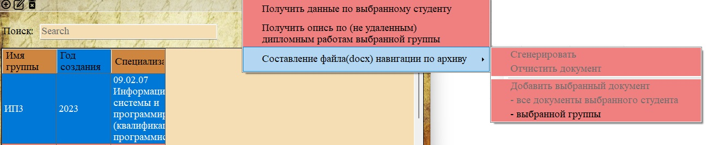
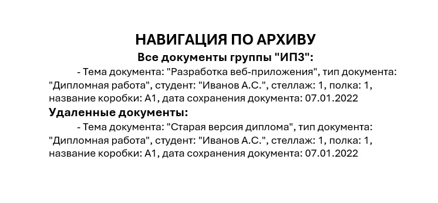

Функция «- выбранной группы» позволяет одним действием добавить в навигационный файл все документы всех студентов выбранной учебной группы. Это самый мощный инструмент для массового добавления документов.

Рис. 1. Пункт «- выбранной группы» в подменю навигации
Где доступна эта функция
Пункт меню «- выбранной группы» становится доступным (активным) только в разделе:
— Группы (раздел 2.3.1)
Также функция может быть доступна, если вы находитесь в других разделах, но выбрали элемент, принадлежащий группе, однако по коду приложения активность проверяется только для раздела «Группы».
Порядок действий
1. Перейдите в раздел «Группы» через главное меню («Данные → Группы»).
2. Выделите строку с нужной группой.
3. В главном меню выберите «Печати → Составление файла навигации по архиву → - выбранной группы».
Какие документы добавляются
При выборе этого пункта программа выполняет следующие действия:
1. Находит всех студентов, принадлежащих выбранной группе.
2. Для каждого студента находит все документы из раздела «Документы работ».
3. Для каждого студента находит все документы из раздела «Удалённые документы».
4. Добавляет все найденные документы в навигационный файл.
Пример
Если в группе «Гр-1а» учатся 5 студентов, и у каждого в среднем по 3 документа, то после использования функции «- выбранной группы» в навигационный файл будут добавлены около 15 документов (или больше, с учётом удалённых).

Рис. 2. Фрагмент навигационного файла со всеми документами группы
Особенности и предупреждения
— Большой объём: при добавлении документов всей группы навигационный файл может стать очень большим. Рекомендуется использовать эту функцию, когда действительно нужно собрать документы целой группы.
— Время выполнения: если в группе много студентов и документов, операция может занять несколько секунд.
— Пустая группа: если в группе нет студентов или у студентов нет документов, в навигационный файл ничего не добавится.
Сравнение способов добавления
| Способ | Охват | Типичное использование |
|---|---|---|
| Добавить выбранный документ | 1 или несколько конкретных документов | Поиск конкретных работ |
| Все документы студента | Все документы одного студента | Проверка полного портфолио студента |
| Все документы группы | Все документы всех студентов группы | Массовая проверка, инвентаризация |